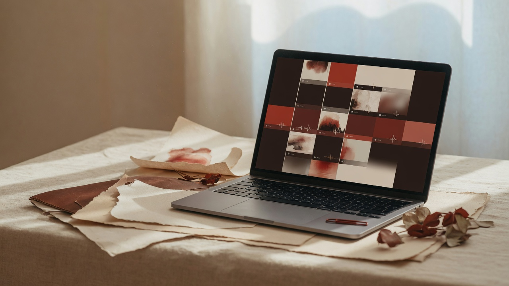
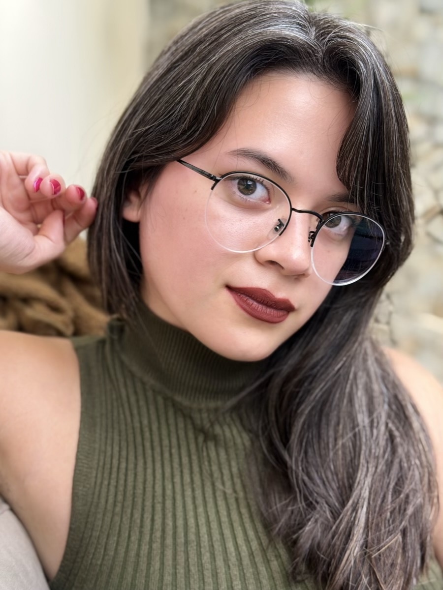
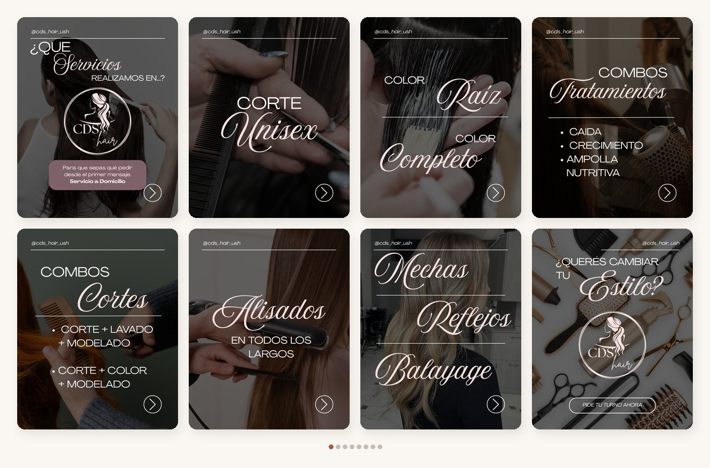
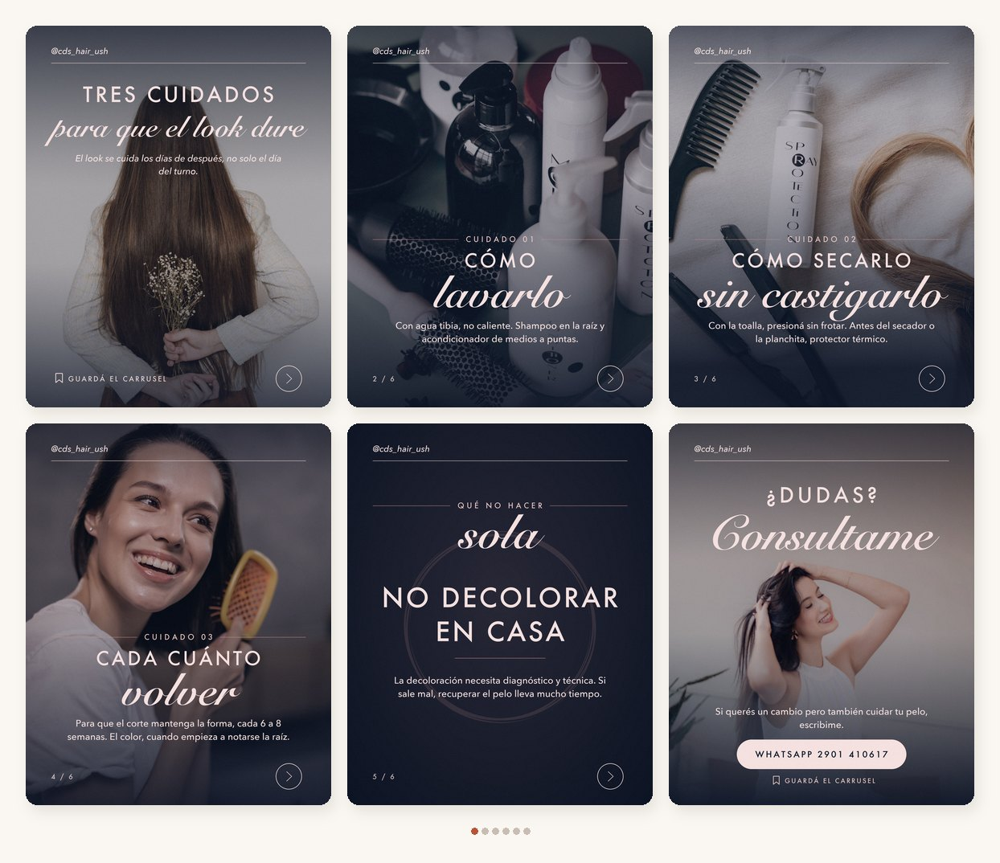
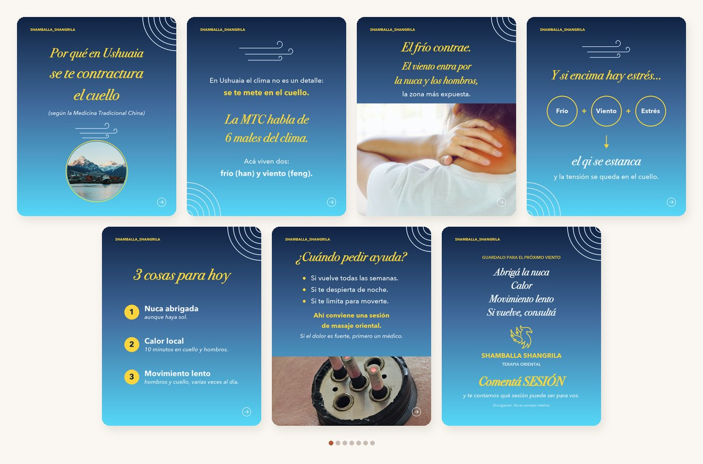
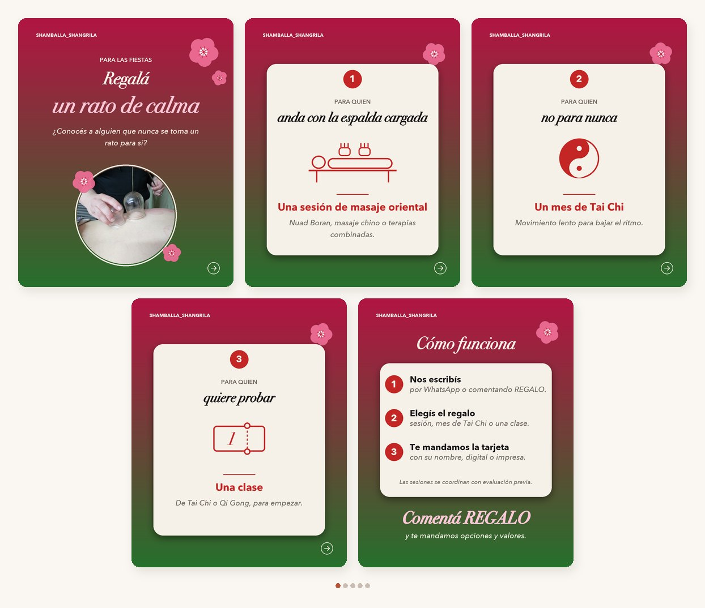
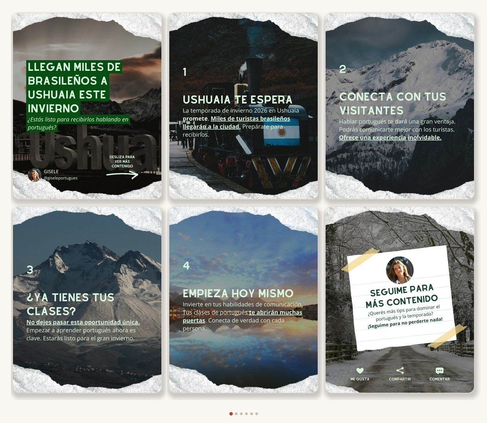
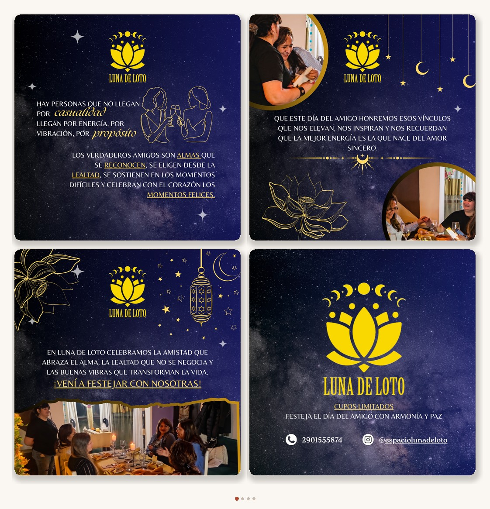
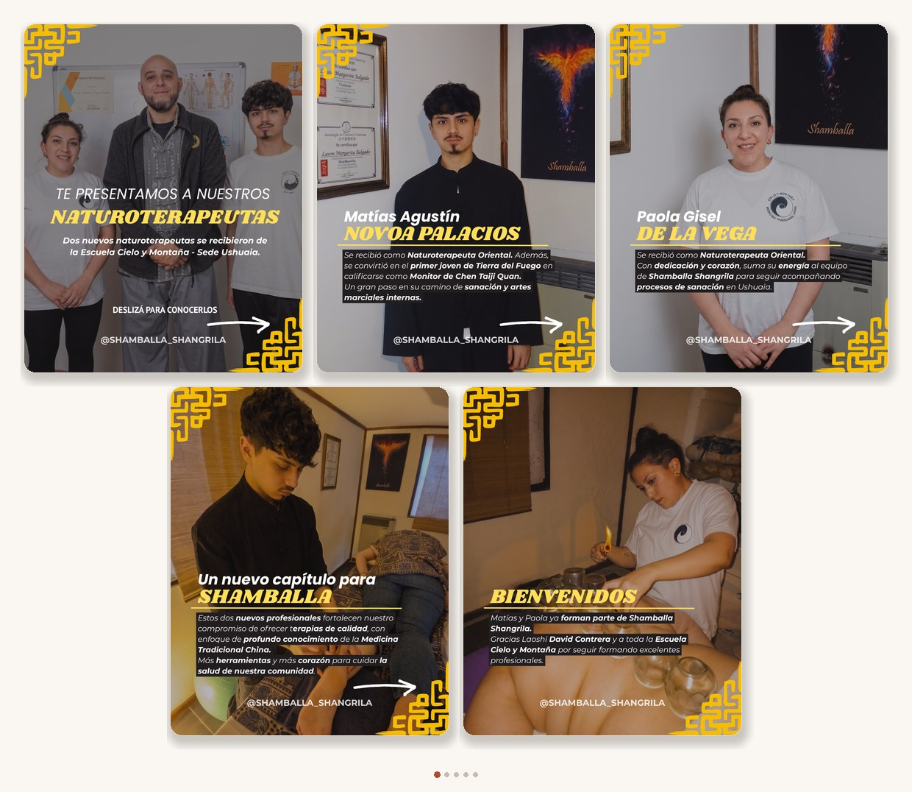
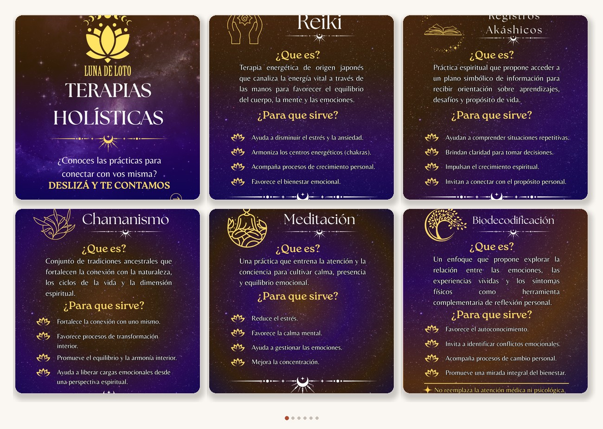

01
Edición de reels y vídeo corto
Cortes, ritmo, subtítulos y hooks para Reels y TikTok. Piezas verticales que se miran hasta el final y llegan listas para publicar.
Edición de reels · Contenido · Diseño para redes
Community · 100% remoto · Lifestyle y bienestar
Edito reels con ritmo y subtítulos, armo carruseles con identidad de marca y cuido la community con un tono humano. Trabajo con marcas de lifestyle, belleza y bienestar que quieren verse profesionales sin sonar genéricas. 100% remoto.


Soy Marianela — también me dicen Masha (y a veces Maia). Edito vídeo vertical, creo contenido y material gráfico para redes, y hago community management: prolijo, claro y con cara humana. Uso herramientas ágiles (CapCut, Canva y más) para entregar piezas listas para publicar.
Trabajo 100% remoto con marcas de bienestar, belleza, lifestyle y educación. Ideal si querés un feed ordenado, reels que se miran hasta el final y publicaciones que no improvisan el tono en cada post.
Cuatro frentes, en este orden. Ideal para lifestyle, belleza y marcas que empiezan o crecen online y necesitan piezas claras, a tiempo.
01
Cortes, ritmo, subtítulos y hooks para Reels y TikTok. Piezas verticales que se miran hasta el final y llegan listas para publicar.
02
Guiones cortos, demos, testimonios y storytelling. Contenido que se siente nativo en la plataforma, no forzado ni de “anuncio”.
03
Calendario, publicaciones, inbox y tono de marca. La cuenta se siente viva, ordenada y en conversación real con la audiencia.
04
Posts, stories y carruseles con la misma familia visual. Identidad clara en el feed, sin improvisar el estilo en cada pieza.
Collages de series reales para Instagram. Cada caso resume el reto, qué hice y el resultado, con la identidad visual de la marca.

Carrusel · 8 slides01 · Identidad + diseño

Carrusel · 6 slides02 · Contenido + community

Carrusel · 7 slides03 · Contenido + diseño

Carrusel · 5 slides04 · Ventas + diseño

Carrusel · 6 slides05 · Contenido + diseño

Carrusel · 4 slides06 · Diseño para redes

Carrusel · 5 slides07 · Contenido + diseño

Carrusel · servicios08 · Diseño · Community
Piezas verticales en formato 9:16 (Reels / TikTok). Tocá uno para abrirlo y reproducirlo en grande.
Cuatro pasos claros y predecibles. Así sabés qué esperar en cada etapa, sin sorpresas.
Objetivos, tono, referencias y plazos. Una llamada o un mensaje corto basta para empezar.
Plan de piezas o de community: qué se entrega, cuándo y en qué formato.
Edición, diseño o gestión con avances para que puedas comentar a tiempo.
Archivos listos para publicar, más los ajustes que hayamos acordado.
Palabras de marcas y espacios con los que trabajé: frescura, compromiso e impronta propia.
“Resumiendo en pocas palabras, Maia refleja en sus trabajos frescura, color y autenticidad, algo muy simple y que hoy está acotado. Los/as invito a que a través del trabajo de Maia transmitan lo que quieran visibilizar y vender a través de su calidez, experiencia y creatividad.”
“Creatividad, espontaneidad, dinamismo y compromiso: características que destacan del servicio que presta.”
“Hola Maia, antes que nada te agradezco el buen trabajo que hiciste: fue muy fresco. No sentí que fuese un video o una edición más, sino que tuvo tu impronta. Es la primera vez que no necesito corregir y que puedo despreocuparme. Así que muchas gracias por tu gran labor.”